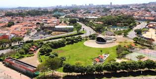

Bem-vindo ao News Notícias, seu portal de notícias atualizado diariamente. Aqui você encontrará as últimas notícias sobre diversos assuntos, desde política e economia até entretenimento e esportes.
1- Notícias de Tecnologia
Novo aplicativo brasileiro ajuda estudantes a organizarem a rotina
Uma startup de estudantes lançou um aplicativo que cria horários automáticos de estudo e envia lembretes personalizados. O app já ultrapassou 50 mil downloads na primeira semana.
Estudante usando o aplicativo de organização de estudos.Leia mais
O aplicativo utiliza inteligência artificial para analisar os hábitos de estudo dos usuários e criar um cronograma personalizado. Ele também oferece dicas de produtividade e técnicas de memorização.
Empresa anuncia celular com bateria que dura até 4 dias
Uma empresa de tecnologia apresentou um novo smartphone com sistema de economia inteligente de energia. Segundo os testes, o aparelho pode funcionar por até quatro dias sem carregar.
O novo smartphone promete revolucionar a duração da bateria.Leia mais
O smartphone utiliza tecnologia de última geração para otimizar o consumo de energia e prolongar a vida útil da bateria.
2- Notícias Gerais
Time escolar vence campeonato regional de vôlei
A equipe masculina de vôlei de uma escola estadual conquistou o título regional após vencer a final por 3 sets a 1. O torneio reuniu escolas de várias cidades da região.
Time escolar vence campeonato regional de vôlei.Leia mais
O time escolar se destacou durante todo o campeonato, mostrando habilidade e trabalho em equipe. A vitória é um motivo de orgulho para a escola e a comunidade local.
Parque da cidade recebe reforma e novos espaços de lazer
A prefeitura inaugurou novas quadras, pista de caminhada e área de convivência no parque municipal. O espaço ficou lotado de visitantes durante o fim de semana.

Parque da cidade recebe reforma e novos espaços de lazer.Leia mais
A reforma do parque inclui a instalação de equipamentos esportivos modernos e a criação de áreas dedicadas a atividades culturais e recreativas.